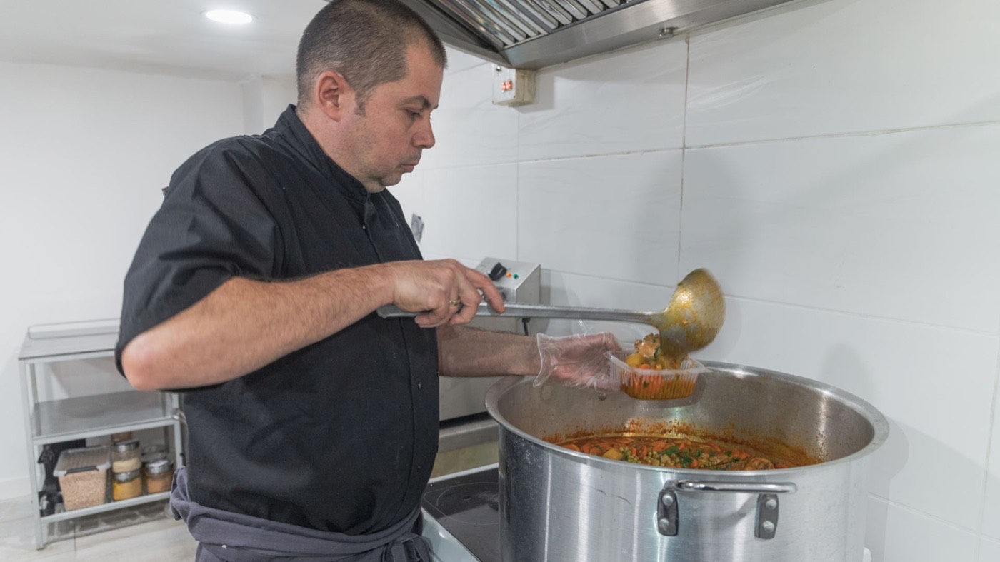
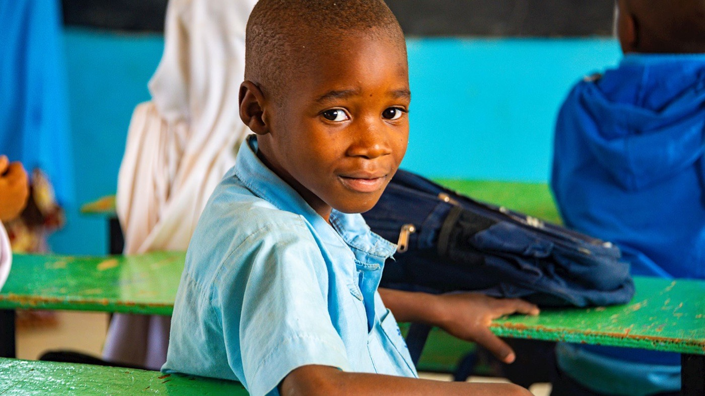
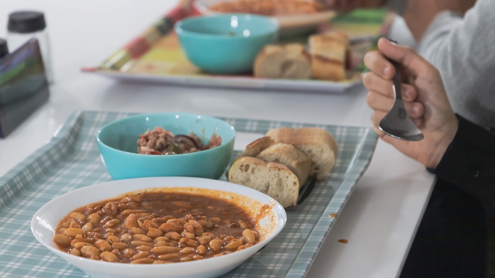
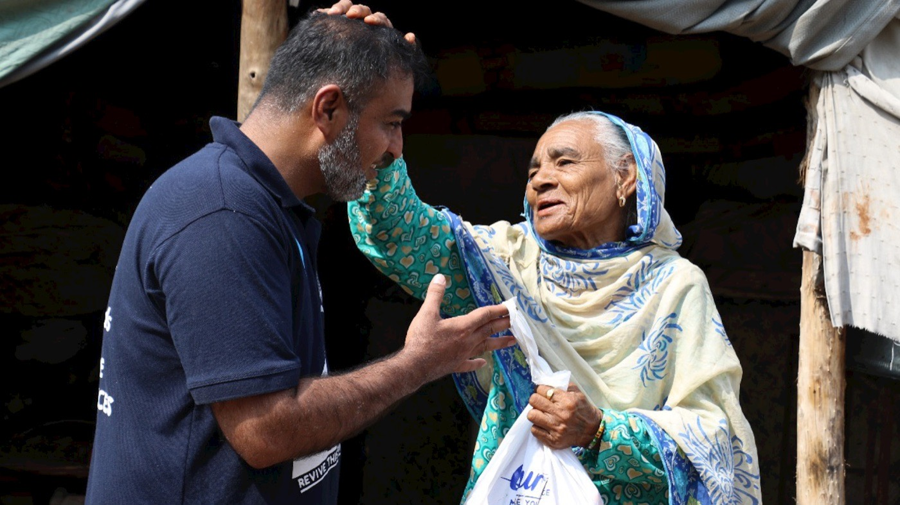
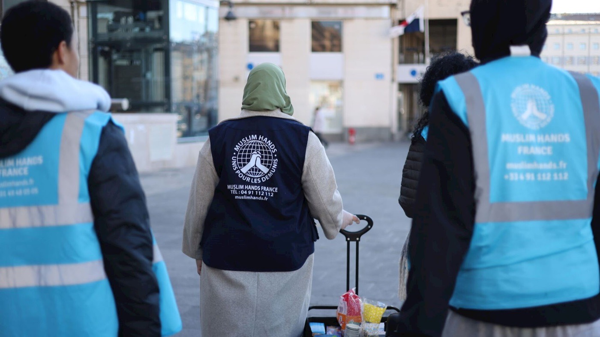

- 20 € : quatre repas chauds distribués en maraude, soit 5 € après réduction d'impôt de 75 %
- Plus de 100 bénévoles actifs, une place pour chacun
- Maraudes deux soirs par semaine, toute l'année
100+bénévoles actifs à Lyon
175mineurs non accompagnés accompagnés
3 448repas distribués grâce à la fidya et la kaffara
75 %de réduction d'impôt
Lyon
Les maraudes : deux soirs par semaine autour de la Part-Dieu
Deux soirs par semaine, nos bénévoles partent avec des repas chauds, des boissons chaudes et des kits d'hygiène à la rencontre des personnes qui dorment autour de la gare de la Part-Dieu, dans la Presqu'île et sous les ponts du Rhône. L'hiver, les sacs se remplissent de duvets, de bonnets et de gants : c'est la campagne hiver, du 2 novembre au 28 février, pendant laquelle 120 kits hiver ont été distribués en un mois à l'hiver 2024.
Au-delà du repas, une maraude, c'est un visage connu, une conversation, une coupe de cheveux offerte par un bénévole coiffeur, une orientation vers les services sociaux quand la personne le souhaite. Tout au long de l'année, l'antenne distribue aussi des colis alimentaires de première nécessité aux familles lyonnaises en difficulté, identifiées avec les centres sociaux et les associations partenaires.

Donner, concrètement
Fonds solidarité France · 75 %
20 € vous coûtent 5 € après réduction d'impôt de 75 %.
Je soutiens LyonDispositif Coluche : 75 % jusqu'à 2 000 €, puis 66 % · reçu fiscal immédiat
Lyon
175 mineurs non accompagnés : un repas, des cours, un adulte à qui parler
Ils ont quinze, seize, dix-sept ans. Ils sont arrivés seuls en France, le plus souvent d'Afrique de l'Ouest après la traversée du Sahara et de la Méditerranée, et attendent que leur minorité soit reconnue pour être pris en charge. En attendant, beaucoup dorment dehors ou dans des squats. À Lyon, nos bénévoles accompagnent 175 de ces jeunes : repas chauds, cours de français, accès à un ordinateur et à une connexion pour leurs démarches, aide à la constitution des dossiers, et surtout un adulte de confiance à qui parler, en lien avec les associations lyonnaises spécialisées.
À la rentrée, l'opération Back to School remet à chacun un cartable, des fournitures et une tenue de sport pour que l'année scolaire commence comme pour les autres.

Lyon
Ramadan, Aïd et zakat al fitr à Lyon
Pendant le Ramadan, l'antenne de Lyon sert des iftars aux personnes isolées et sans abri avec ses partenaires, et organise chaque année une conférence Ramadan ouverte à tous. La zakat al fitr collectée en France est distribuée en colis alimentaires avant la prière de l'Aïd : plus de 5 000 bénéficiaires en 2024. La fidya et la kaffara financent des repas pendant les trois mois qui suivent : 3 448 repas distribués en 2024. À l'Aïd al-Adha, la viande du sacrifice a été partagée avec 440 bénéficiaires lyonnais.

Lyon
Que finance mon don pour Lyon ?
| Don | Ce qu'il permet | Coût après impôt | Fiche |
|---|---|---|---|
| 5 € | Un repas chaud et une boisson chaude distribués en maraude | 1,25 € | Donner |
| 20 € | Quatre repas, ou un kit d'hygiène complet | 5 € | Donner |
| 50 € | Un colis alimentaire de première nécessité pour une famille | 12,50 € | Donner |
| 100 € | Un mois de cours de français et d'accès numérique pour un mineur isolé | 25 € | Donner |
| 30 € | Un colis chaleur pour une personne sans abri (hiver) | 7,50 € | Donner |
Lyon
Pourquoi 75 % de réduction d'impôt ?
Les dons qui financent la fourniture gratuite de repas, de soins ou d'un hébergement aux personnes en difficulté bénéficient du dispositif « Coluche » : 75 % de réduction d'impôt jusqu'à 2 000 € par an, puis 66 % au-delà. Les maraudes, les colis alimentaires, les iftars solidaires et l'accompagnement des mineurs non accompagnés y sont éligibles. 20 € vous coûtent 5 €, 100 € vous coûtent 25 €. Le reçu fiscal est envoyé par e-mail immédiatement après le don. Comprendre les deux taux et simuler mon don.

Lyon
Bilan 2024 à Lyon
120 kits hiver
Distribués en un mois pour protéger les sans-abri du froid, hiver 2024.
3 448 repas
Distribués en trois mois grâce à la fidya et la kaffara collectées pendant le Ramadan.
5 000 bénéficiaires
De colis alimentaires de zakat al fitr, remis avant la prière de l'Aïd.
440 bénéficiaires
De viande fraîche partagée à l'Aïd al-Adha.
175 jeunes
Mineurs non accompagnés suivis : repas, français, numérique, accès aux droits.
100 bénévoles
Maraudes, distributions, coupes de cheveux, cours : une équipe lyonnaise.
Les comptes de nos actions en France sont publiés chaque année dans le rapport annuel.

« Je viens chercher le colis, mais surtout on me demande comment je vais. Mes enfants mangent des repas équilibrés, et moi je respire un peu. »Haghine, mère de famille, bénéficiaire des colis à Lyon, 2024
Lyon
Et aussi à Marseille et à Paris

Paris et Saint-Ouen
Nos actions à ParisLyon
Devenir bénévole à Lyon
Maraudes, préparation des colis, cours de français, inclusion numérique, accompagnement administratif, logistique, traduction : il y a une place pour chacun, une heure par semaine ou une fois par mois. Aucune compétence n'est requise ; une réunion d'accueil a lieu chaque mois. Laissez-nous vos coordonnées, l'équipe de Lyon vous recontacte sous une semaine.
Lyon
Questions fréquentes sur nos actions à Lyon
Que fait Muslim Hands à Lyon ?
Des maraudes deux soirs par semaine autour de la Part-Dieu et dans la Presqu'île, des distributions de colis alimentaires toute l'année, des coupes de cheveux et des kits d'hygiène, les colis chaleur de la campagne hiver, les iftars du Ramadan et l'accompagnement de 175 mineurs non accompagnés : cours de français, inclusion numérique, accès aux droits.
Qui sont les mineurs non accompagnés que vous accompagnez ?
Des adolescents arrivés seuls en France, pour la plupart d'Afrique de l'Ouest, en attente de reconnaissance de leur minorité ou de prise en charge. Nos bénévoles leur offrent un repas, des cours de français, un accès au numérique pour leurs démarches et un adulte à qui parler, en lien avec les associations lyonnaises spécialisées.
Pourquoi mon don pour Lyon est-il déductible à 75 % ?
Les dons qui financent la fourniture gratuite de repas et l'aide aux personnes en difficulté bénéficient du dispositif « Coluche » : 75 % de réduction d'impôt jusqu'à 2 000 € par an, puis 66 %. Les maraudes, les colis et les iftars de Lyon y sont éligibles. 20 € vous coûtent 5 €.
Comment devenir bénévole à Lyon ?
Remplissez le formulaire de cette page ou appelez le 01 49 48 05 05. Plus de 100 bénévoles participent déjà aux maraudes, aux distributions et aux cours. Une heure par semaine ou une fois par mois, sans compétence requise ; une réunion d'accueil a lieu chaque mois.
Puis-je donner des vêtements ou des duvets ?
Oui, propres et en bon état, lors des points de collecte annoncés avant chaque campagne hiver sur cette page et dans la lettre mensuelle. Les denrées sèches non ouvertes sont aussi bienvenues pour les colis.
Intervenez-vous aussi à Paris et à Marseille ?
Oui. À Marseille, notre restaurant solidaire La Fourchette Fraternelle sert des repas chauds à table du lundi au vendredi. À Paris et Saint-Ouen, maraudes gare du Nord et porte de la Chapelle trois soirs par semaine et iftars solidaires au siège.